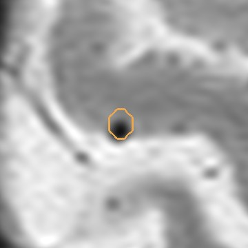
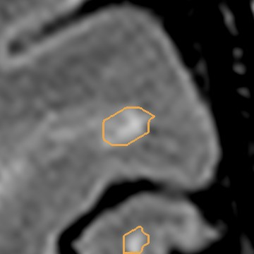
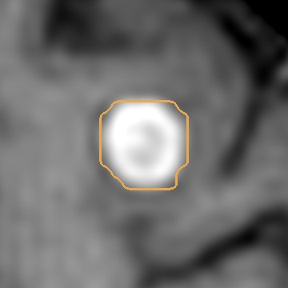
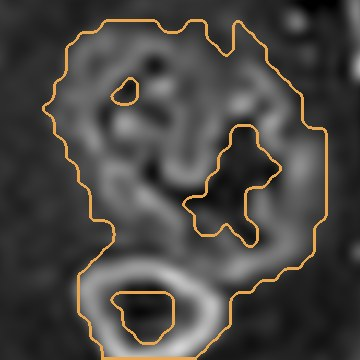
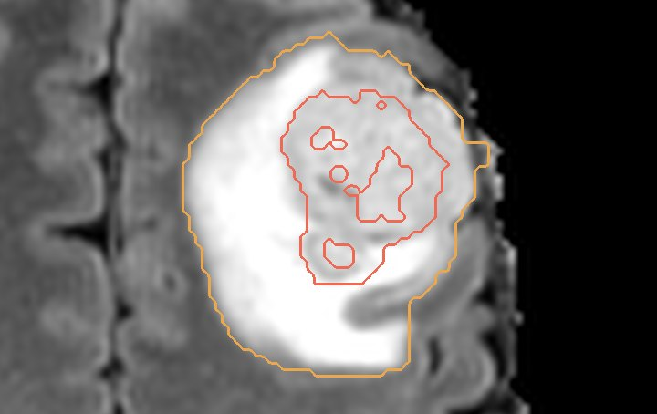
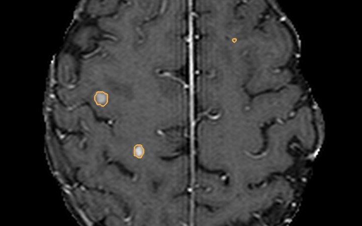
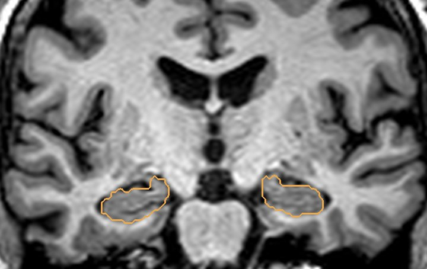
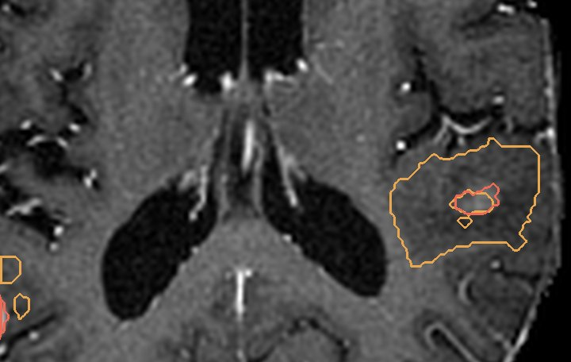

See it work
See what it sees.
Fifteen real patients, three for each finding. Everything in amber is what Walnut found on its own. Scroll over the scan or drag the railSwipe sideways across the scan or drag the slider to move through the slices, and switch to Compare to put the expert's outline beside it.
Precision
The small things are the hard part.
A big tumor is easy to see. The findings that change care are often a few millimeters wide: a bleed the size of a grain of rice, a new plaque, a metastasis that hasn't grown yet. Walnut is built to catch them.




Neurodegeneration
It watches the brain change.
Alzheimer's starts years before symptoms, as a slow loss of tissue in the hippocampus. From one routine MRI, Walnut measures those structures, reads the disease underneath, and predicts where a patient is headed.
Who declines, and how fast
Clinical data here means age, sex, education, APOE genotype, diagnosis and baseline cognitive scores, plus a p-tau217 blood test in A4. Adding Walnut's read of one scan predicts each person's future far better.
From a T1 alone
A routine structural scan, with no PET and no clinical data.
Why it exists
An eye inside every scan.
Most brain MRIs are read once, by one person, in a few minutes. Walnut is built to look at every voxel of every scan, every time, and to give the people and machines that act on it a precise map of what's there.

Surgical roboticsKnow what to cut and what to spare.
A surgical robot has to know what it's looking at. Walnut labels tumor, edema, infarct and healthy anatomy voxel by voxel, so an autonomous system can tell the tissue it should remove from the tissue it must protect.

ScreeningRun on every MRI, before anyone reads it.
Walnut can run the moment a scan is acquired. It flags tumors, bleeds, strokes and plaques before a radiologist opens the study, so the urgent cases move to the top of the list and the small ones don't slip through.

Alzheimer's diseasePrognosis and treatment choice.
Walnut predicts who will decline and how fast, and reads tau burden from a routine T1. Before anti-amyloid treatment, it also counts the microbleeds that decide who can safely start the drugs.

Brain tumorsTreatment and follow-up.
Walnut measures every tumor compartment, reads IDH mutation status from imaging, and calls whether a glioma grew, shrank or held between scans, so treatment decisions rest on consistent numbers.
Performance
Measured on patients it never saw.
Every number is Walnut on held-out patients from public datasets, checked against expert outlines, PET scans or clinical follow-up. The full list of all 43 tasks, including where Walnut still struggles, is at the bottom.
What it finds
Overlap with expert outlines, where 1.0 is a perfect match (Dice).
- Outlines gliomas, tumor and edemaBraTS 2021 · 500 patients
- 0.92overlap with expert
- Finds a glioma's actively growing edgeBraTS 2021 · 500 patients
- 0.82overlap with expert
- Outlines vestibular schwannomascrossMoDA · 395 patients
- 0.83overlap with expert
- Outlines brain metastasesUCSF-BMSR · 199 patients
- 0.78overlap with expert
- Outlines acute strokesSOOP · 500 patients
- 0.74overlap with expert
- Outlines MS plaques3 cohorts · 200 patients
- 0.69overlap with expert
What it predicts
One answer per patient, from the scan. AUROC: 1.0 is perfect, 0.5 is a coin flip.
- Calls whether a glioma grew, shrank or heldUCSF · 297 scan pairs
- 0.91AUROC
- Tells IDH-mutant gliomas from wild-typeUCSF-PDGM · 248 patients
- 0.90AUROC
- Flags patients likely to do poorly after a strokeSOOP · 368 patients
- 0.82AUROC
- Reads white-matter disease from a T1ADNI · 500 patients
- 0.92correlation with FLAIR measure
- Estimates brain ageIXI · 281 people
- 2.8years average error
See all 43 results
The full list, including where Walnut still struggles: psychiatric diagnoses from structural MRI are close to chance. Every number is measured on patients the scoring model never trained on; the notes mark the exceptions we know of.
Lesions
- Glioma, tumor and edemaBraTS 2021 · 500
- 0.92Dice
- Glioma, enhancing tumorBraTS 2021 · 500
- 0.82Dice
- Brain metastases, enhancing tumorUCSF-BMSR · 199
- 0.78Dice
- Edema around metastases, FLAIRUCSF-BMSR · 198
- 0.59Dice
- Edema around metastases, contrast T1UCSF-BMSR · 198
- 0.51Dice
- Vestibular schwannomacrossMoDA · 395
- 0.83Dice
- Ischemic stroke, DWISOOP · 500
- 0.74Dice
- Ischemic stroke, DWIISLES 2022 and SOOP · 495
- 0.71Dicebase model: post-training used ISLES 2022
- Multiple sclerosis plaquesLjubljana, MS3SEG, MSLesSeg · 200
- 0.69Dice
- Cerebral microbleedsADNI, AIBL, VALDO · 300
- 0.20Dice
Tumors and treatment
- IDH mutation in gliomaUCSF-PDGM · 248
- 0.90AUROC
- Glioblastoma survival past 1 yearUPenn-GBM
- 0.70AUROC
- Glioma enhancing tumor grew, shrank or heldUCSF · 297 pairs
- 0.91AUROC
- Glioma edema grew, shrank or heldUCSF · 297 pairs
- 0.90AUROC
- Schwannoma grew, shrank or heldUCSF · 309 pairs
- 0.42AUROC
- Glioma progression, contrast T1UCSF · 169
- 0.75AUROC
- Glioma progression, FLAIRUCSF · 169
- 0.69AUROC
Neurodegeneration and Alzheimer's
- Normal, MCI or Alzheimer's dementiaADNI · 500
- 0.79AUROC
- Normal, MCI or dementiaNACC · 500
- 0.77AUROCNACC may share people with the OASIS-3 data this model trained on; unchecked
- MCI to dementia, time to eventADNI · 500
- 0.77C-index
- MCI to dementia, time to eventNACC · 500
- 0.78C-indexNACC may share people with the OASIS-3 data this model trained on; unchecked
- Cognitively normal to impaired, time to eventADNI · 467
- 0.63C-index
- Tau PET burden from a T1ADNI · 500
- 0.56R²
- Tau PET burden from a T1NACC · 500
- 0.60R²NACC may share people with the OASIS-3 data this model trained on; unchecked
- Tau PET burden from a T1A4 · 278
- 0.11R²
- Amyloid PET burden from a T1ADNI · 500
- 0.24R²
- Amyloid PET burden from a T1NACC · 341
- 0.18R²NACC may share people with the OASIS-3 data this model trained on; unchecked
- Future cognitive decline (PACC)A4 · 666
- 0.36R²clinical data alone 0.28
- Progression to impairment (CDR)A4 · 602
- 0.78AUROCclinical data alone 0.78
- Future cognitive decline (ADAS-13)ADNI · 454
- 0.24R²clinical data alone 0.11
- Future dementia severity (CDR-SB)ADNI · 512
- 0.33R²clinical data alone 0.24
- Future hippocampal shrinkage rateA4 · 398
- 0.28R²clinical data alone 0.20
- Future ventricle expansion rateA4 · 398
- 0.14R²clinical data alone 0.14
- Future tau accumulation rateA4 · 230
- 0.23R²clinical data alone 0.24
- Future tau accumulation rateADNI · 294
- 0.20R²clinical data alone 0.22
- White-matter disease burden from a T1ADNI · 500
- 0.92r
- White-matter disease burden from FLAIRADNI · 500
- 0.94r
Whole brain
- Brain age, average errorIXI · 281
- 2.8years
- Brain age, average errorOpenBHB · 500
- 1.9yearsabout a quarter of these scans were in pretraining
- Poor outcome after strokeSOOP · 368
- 0.82AUROC
- Psychiatric diagnosisCNP
- 0.66AUROCthese scans were in pretraining, without labels
- AutismABIDE
- 0.57AUROC
- ADHDADHD-200
- 0.49AUROC
Built on
A quarter of a million brains.
Walnut learned from public research MRI collected on many scanners, at many hospitals, from healthy volunteers and patients, then sharpened on expert-outlined lesions.
- Training data
- 253,418 scansFOMO-300K: T1, T2, FLAIR, diffusion and more
- Compute
- 8 × H10015 hours of pretraining, 1.6 × 10²⁰ FLOPs
- Input
- Structural MRIT1, contrast T1, T2, FLAIR, DWI, T2*
- Evaluated on
- 43 tasks20+ datasets, scored on held-out patients